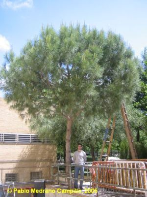
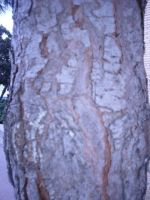
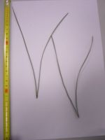

|
Árbol aciculifolio, monoico, resinoso de 7-12 m [puede alcanzar hasta 30 m(1)]; tronco recto de 65-125 cm de cincunsferencia, corteza pardogrisácea, con grietas rojizas; copa aparasolada. Hojas aciculares de 12-21 cm x 1.5-2 mm dispuestas por pares sobre braquiblatos, persistentes, agudas, un poco arqueadas. Piñas masculinas en espigas cilíndricas. Piñas femeninas
de 8-14 x 7-10 cm, ovoides, con
numerosas escamas; escamas gruesas, piramidales, con
apófisis
poco
saliente. Semillas
con
cubierta más o menos leñosas, con ala rudimentaria y
caduca. Piñones
comestibles, sin alas membranáceas |
 |
|
  Fotos: Reyes Correa Gómez, 2006 |
Observaciones: El nombre genérico deriva del celta pin que significa montaña, roca, por la facilidad de éstos árboles de arraigar en terrenos descarnados. El epíteto específico, pinea, es el nombre latino de la piña, ya que esta especie es la única que produce piñones comestibles, aprovechados desde tiempos remotos. Su madera se usa para la construcción. En medicina popular se usaban sus piñas como balsámico para curar la tos y enfermedades del pecho. Muy utilizado como árbol ornamental y en reforestaciones. |
|
Área de origen.- Región Mediterránea. |
|
|
Uso en el campus: Inicialmente dos ejemplares como árboles ornamentales. Solo queda uno, el de la foto. |
Localización : Zona
Central del Campus: |
| (1) Galán, P. & al. (1998) Árboles y arbustos de la Península Ibérica, Ed. Jaguar, Madrid | |
|
Mª
Reyes
Correa Gómez & Carlos Romero Zarco (2006) P.D.: El
ejemplar del jardín NE de la E.T.S. de Ingeniería
Informática fue talado hace pocos años. Era un
hermoso ejemplar de medio siglo de edad, pero estaba
inclinado y en aquel año el viento había derribado
numerosos pinos en el Parque del Alamillo. Había un
temor exagerado a que cayera en el campus aunque
estaba bien resguardado del viento. C.R.Z. (2026).
|
|